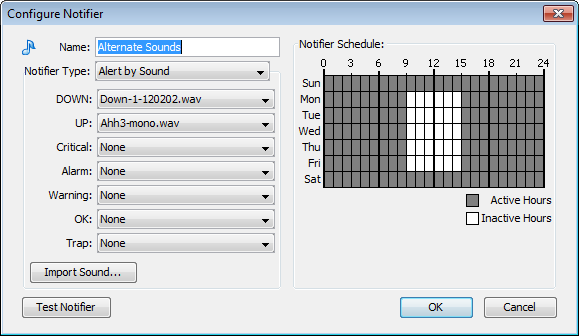

Configuring a Sound Notifier
A sound notifier plays a sound whenever a device enters a new state. For
each state, you can assign a different sound.
|

The Configure Notifier window for Sound
notifier type. For each device state, you can select a different sound.
|
To configure a sound notifier:
- Create or edit the notifier you want to configure.
- In the Notifier Type dropdown menu, choose Alert by Sound if it is not already chosen. The Sound Notifier
configuration panel appears as shown in above.
- For each state, use the Sound Name
dropdown menu to choose the sound you want to play when the device changes
to that state. If you do not want sounds to play for certain states, set
those states to None. The states are described below.
- If the sound
you want to use for a particular state does not appear, click Import Sound... to import a sound file containing the sound
you want to use.
Notes:
-
On Windows machines, the available sounds are located in
the InterMapper Settings/Sounds folder.
-
On Mac OS X machines, the available sounds include any system
sounds or the sound files in /System/Library/Sounds folder, as well as those in the /InterMapper Settings/Sounds folder.
-
Supported sound file formats: .WAV, .AIF, and .AU.
-
InterMapper RemoteAccess must download each sound file from the
InterMapper server, but once it is downloaded it is cached on the remote
machine. Bear in mind that large sound files may affect system performance
for remote users.
- Sounds are queued up for playing. One sound does not start until the previously
queued sound is completely finished playing. Relatively short sound files
are recommended.
Device States
- Up - Plays a sound when
a device responds normally after being down.
- Down - Plays a sound when
a device goes down (fails to respond to InterMapper's queries.)
- Critical - Plays a sound when a device enters Critical state.
- Alarm - Plays a sound
when a device enters Alarm state.
- Warning - Plays a sound
when a device enters Warning state.
- OK - Plays a sound when
a device is no longer in critical, alarm, or warning state.
- Trap
- Plays a sound when
InterMapper receives an SNMP trap from the device.
InterMapper's default sound notifiers are as follows:
- Down - plays the Klaxon sound
- Up - plays the Yahoo sound
- All other states are set to None.
What you can do with sounds
You can use sounds in many different ways to help give you audible indicators
the condition of your network. Here are two possible uses for sound notifiers.
- Create different sound sets
for different times of day, or for different days - create different
sound notifiers, each having a different notifier schedule. This can be
helpful if you need to, for example, use certain notification sounds during
working hours in a busy office, and have louder, more easily distinguishable
sounds outside working hours, when you are working away from your computer.
- Create different
sound sets for certain devices - create sound notifiers for certain
kinds of devices, and use different sounds. You can tell without looking
if, for example, a certain machine or router goes down. It is also useful
if you been having trouble with a particular device.

Sound files must be placed in the InterMapper Settings/Sounds folder before they can be made available in the Server Configuration Notifier List panel of the Server Settings window.